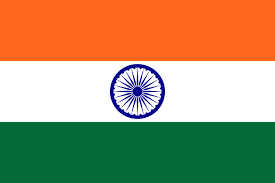

India, officially the Republic of India (ISO: Bhārat Gaṇarājya),[22] is a country in South Asia. It is the seventh-largest country by area; the most populous country as of June 2023;[23][24] and from the time of its independence in 1947, the world's most populous democracy.[25][26][27] Bounded by the Indian Ocean on the south, the Arabian Sea on the southwest, and the Bay of Bengal on the southeast, it shares land borders with Pakistan to the west;[j] China, Nepal, and Bhutan to the north; and Bangladesh and Myanmar[k] to the east. In the Indian Ocean, India is in the vicinity of Sri Lanka and the Maldives; its Andaman and Nicobar Islands share a maritime border with Thailand, Myanmar, and Indonesia.
About 55,000 years ago, the first modern humans, or Homo sapiens, had arrived on the Indian subcontinent from Africa, where they had earlier evolved.[28][29][30] The earliest known modern human remains in South Asia date to about 30,000 years ago.[28] After 6500 BCE, evidence for domestication of food crops and animals, construction of permanent structures, and storage of agricultural surplus appeared in Mehrgarh and other sites in Balochistan, Pakistan.[84] These gradually developed into the Indus Valley Civilisation,[85][84] the first urban culture in South Asia,[86] which flourished during 2500–1900 BCE in modern day Pakistan and western India.[87] Centred around cities such as Mohenjo-daro, Harappa, Dholavira, and Kalibangan, and relying on varied forms of subsistence, the civilisation engaged robustly in crafts production and wide-ranging trade.[86] Ancient India was one of the four Old World cradles of civilization.[88]